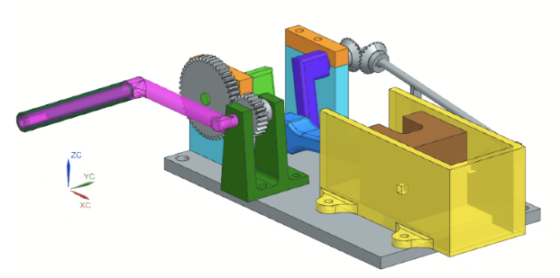
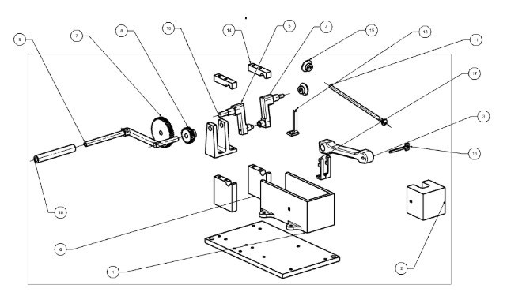
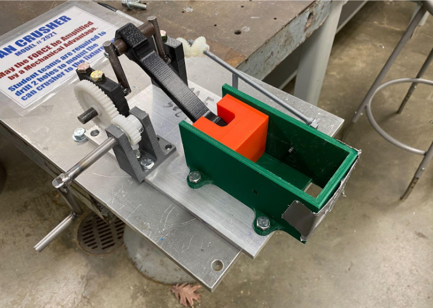

The Problem
ME 470 at Michigan State covers the kinematics of linkages and spur gears, and it finishes with a design-and-build project. For our team, that project was a mechanical can crusher: turn a handle, flatten a can. It followed Project A, a slider-crank paperweight that served as our warm-up.
The design has to balance three things at once. The stroke must be long enough to take a whole can. The ram has to deliver enough force to crush it; we designed for 112 lbf at the ram. And the handle force has to stay comfortable for one hand. All of this had to work in 3D-printed plastic.
My Role
- One of five engineers in ME 470 Group 2, sharing concept selection, linkage analysis, CAD and the build.
- Carried our Project A lessons into the crusher: we added an offset to the slider line and compared a four-bar linkage before committing.
To fill in: Name the parts of the crusher you owned, for example the kinematic analysis, the gear check, a specific printed part, or the assembly.
Approach
We built one spreadsheet model for position, velocity and acceleration, and ran every candidate through it. A four-bar linkage (links of 5, 8, 6 and 8 in) let the transmission angle fall to about 19°, far below the usual 40° guideline. At angles that low, most of the hand’s effort goes into the joints instead of the can. An offset slider-crank also gives the straight-line motion a ram needs, so we refined it over three versions:
| Version | Crank, a | Rod, b | Offset, c | Stroke | Min. transmission angle |
|---|---|---|---|---|---|
| Project A paperweight | 0.75 in | 3.00 in | 0 | 1.50 in | 75.5° |
| Crusher, first pass | 1.40 in | 4.00 in | 1.00 in | 2.91 in | 53.1° |
| Crusher, final | 1.75 in | 5.25 in | 1.00 in | 3.57 in | 58.4° |
| Four-bar alternative | Links of 5, 8, 6 and 8 in (rocker output, no straight stroke) | 18.6° | |||
The key decisions:
- Longer crank and rod. A 1.75 in crank and 5.25 in rod give a 3.57 in stroke, which takes a full can and still stops the ram 0.67 in short of the end wall.
- A 1 in offset. Our Project A report recommended adding an offset. With the ram’s line 1 in below the crank axis, the outward stroke takes 188° of crank rotation and the return takes 172°. Turned in the direction shown in the model, the crushing stroke is the slower, higher-force one.
- A 2:1 gear stage. A 1.2 in pinion on the handle drives a 2.4 in gear on the crank, which doubles the torque reaching the crank.
- Parts designed for printing and assembly. The crankshaft prints in two halves so the closed end of the connecting rod can slide onto the pin. Split pillow blocks with screw-down caps hold the crank. An opening in the chamber floor lets each flattened can drop out on its own.
Explore the Crusher
This is our CAD, built from the team’s STL files. Press play to run a full cycle: a can drops in, the ram flattens it, and on the return stroke the flattened can falls out through the floor. Drag the crank-angle slider to stop anywhere in the cycle, and pick a part to see what it does.
Kinematics, Live
This is the spreadsheet model we used to size the crusher, running live and synced to the 3D model above. Drag the orange crank pin in the diagram, or click and drag across any chart, to move the crusher.
Two things stand out. Mechanical advantage is lowest mid-stroke, at about 4:1 from handle to ram, so the worst case at the handle is about 28 lbf for a 112 lbf crush (a frictionless estimate). Toward the end of the stroke it climbs steeply as the crank and rod line up, right where the ram gives the can its final squeeze. The transmission angle stays between 58° and 90° all the way round, well above the 40° guideline.
Analysis
Beyond position and velocity, we ran an acceleration analysis at a crank speed of 5 rad/s and 10 rad/s². Then we ran a dynamic force analysis that solved the joint forces and input torque as an 8 × 8 matrix at three crank angles, with the 112 lbf crush load on the ram.
The gear check used a design torque of 395 lb·in at the crank. That is about 1.8 times the 225 lb·in quasi-static peak for a 112 lbf crush, so the gears carry margin. At the 1.2 in pinion, that torque puts 329 lbf of tangential load and 120 lbf of radial load on the 20° teeth.
Results
The final design packs 10 printed part designs (12 prints) onto one base, driven by a 3.75 in handle. It needs about 28 lbf at the handle in the worst case to push 112 lbf at the ram, before friction.
To fill in: Add how the physical prototype performed, for example whether it crushed cans on demo day, how many handle turns it took, and any part that cracked or needed a reprint.
From Project A to the Crusher
The slider-crank paperweight ended with two recommendations, and both shaped this design:
- “Add an offset (link c).” The crusher’s ram runs 1 in below the crank axis.
- “Look at four-bar designs.” We did, and the spreadsheet showed the four-bar’s 19° transmission angle against the slider-crank’s 58°.
Gallery


